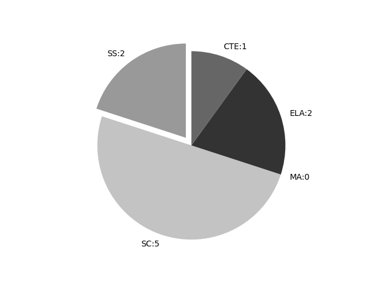

Alaska
Report date: 2021-07-08
The frequency of all keywords found in this state's standards: 10
Comparable state score: 0.141 (median: .303, SD: .324)
The frequency above is the sum of all keywords found in all of this state's four core academic standards and the state's CTE/career standards. This total count is broken down by keyword and discipline area below.
On this site, 'comparable scores' are calculated as: keywords found divided by total words in the standards document(s) - multiplied by 100,000. The comparable scores attempt to normalize data, accounting for very different sizes of curriculum guidance documentation.
Frequencies by keyword or phrase:- spatial: 9
- geospatial: 1
- GIS: 0

Frequencies by discipline area: - SS: 2
(Comp: 0.649) - SC: 5
(Comp: 0.179) - MA: 0
(Comp: 0.0) - ELA: 2
(Comp: 0.076) - CTE: 1
(Comp: 0.27)
Support files: Examples of keyword use by discipline area (and document): - CTE
- CCTC_Standards_Formatted_2014.pdf, page:4, position:1392
maintain AFNR mechanical equipment and power systems. 3. Service and repair AFNR mechanical equipment and power systems. 4. Plan, build and maintain AFNR structures.5. Use control, monitoring, geospatial and other technologies in AFNR power, structural
- ELA
- ELA_and_Math.pdf, page:48, position:1646
to better understand each of the words. 6. Acquire and accurately use grade-appropriate conversational, general academic, and domain-specific words and phrases, including those that signal spatial and temporal relationships (e.g., After dinner t - ELA_and_Math.pdf, page:119, position:199
- SC
- science-standards-for-alaska.pdf, page:188, position:744
the seasons for the different regions of AK. Compare and describe the seasons of the northern hemisphere and the southern hemisphere.] [Assessment Boundary: Assessment limited to qualitative and spatial explanations for seasons.] MS-ESS1-2 Develop an - science-standards-for-alaska.pdf, page:190, position:438
of the seasons for the different regions of AK. Compare and describe the seasons of the northern hemisphere and the southern hemisphere. Assessment Boundary: Assessment limited to qualitative and spatial explanations for seasons. The performance expect - science-standards-for-alaska.pdf, page:193, position:1065
of specific periods or epochs and events within them.] MS-ESS2-2 Construct and present an evidence-based explanation of how geoscience processes have changed Earth™s surface at varying time and spatial scales. [Clarification Statement: Emphasis is o - science-standards-for-alaska.pdf, page:195, position:192
- science-standards-for-alaska.pdf, page:300, position:1443
of solar system objects, and the impact cratering record of planetary surfaces.] HS-ESS2-1. Develop a model to illustrate how Earth™s internal and surface processes operate at different spatial and temporal scales to form continental and ocea
- SS
- Geography.pdf, page:0, position:106
- Geography.pdf, page:1, position:53
{kind=link}